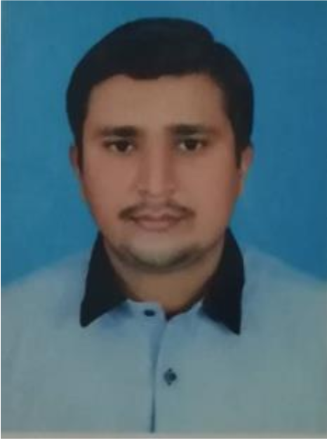

My CV

Personal Profile
- Name: Muhammad Musadiq Zaman
- Mobile: +92349-3711127
- Email: zmusadiq@gmail.com
-
Address: L-21 Ibrahim Garden Near Al Syed Centre Quaidabad Landhi
Karachi.
- Date of Birth: 22 January 1993
- CNIC: 42201-4084864-1
- Gender: Male
- Languages: Urdu, English, Punjabi
Objective
Seeking a career in a reputed organization that provides me opportunities
in designing, developing, and evaluating energy-related projects for cost
reduction and energy efficiency. Also provides me help to develop
technical skills in professional growth.
Education
- Matriculation: (1st Div) Science (2009)
- Intermediate: (1st Div) Pre-Engineering (2011)
-
Graduation: BE (Energy Engineering) From Hamdard University (3.05 CGPA)
(2016)
Experience
- Junior Elementary School Teacher (JEST BPS 14), current position.
-
6 Weeks Internship in Margalla Training Institute (HEAVY INDUSTRIES
TAXILLA) from 11-07-2016 to 19-08-2016.
-
6 Months Experience as a Site Engineer in Coal Fired Power Plant at Port
Qasim Karachi (Sep 2016 to March 2017).
Academic Project
- Final year project: “Experimental Study of Solar Trough”
- Design and construction of miniature solar parabolic collector.
-
Construction of solar cooker using point focus concentrating collector.
Related Courses
- Wind Energy
- Solar Energy
- Energy Transmission and Distribution
- Power Plant Engineering
- Energy Conservation and Efficiency Enhancement
- Refinery Engineering
- Thermodynamics & Basic Electrical Engineering
- Nuclear Engineering
- Instrumentation And Control
- Hydro Power
- Health And Safety Aspects
- Fossil Fuel Geology
Go Back to Home